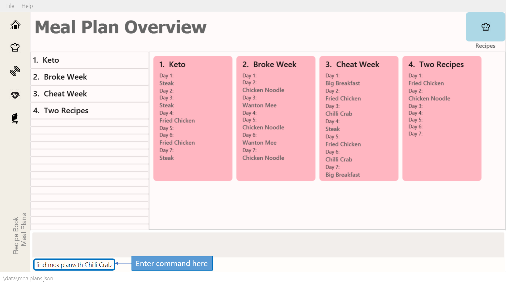
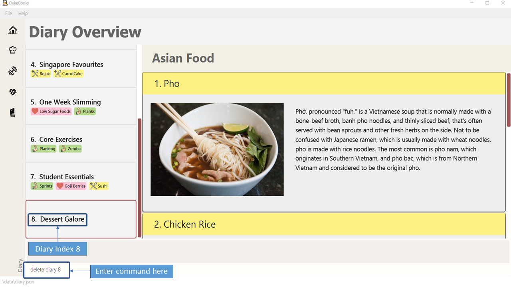
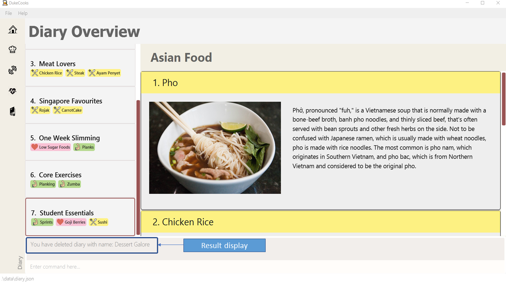
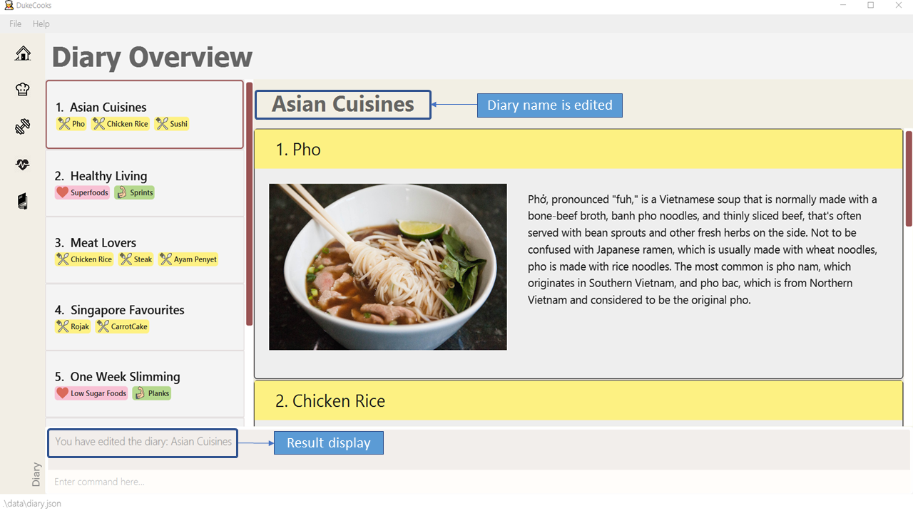

By: DukeCooks Since: Sep 2019 Licence: MIT
1. Welcome to DukeCooks
1.1. Who are we?
DukeCooks is a revolutionary lifestyle application, specially designed for health-conscious students. Targeting busy students that are long-time users of the Command-Line Interface (CLI), DukeCooks offers such users a CLI healthy lifestyle application. This means, expert-CLI student users will be able to execute different commands, all within a single line. You will be able to manage various aspects of your lifestyle, from your diet, to exercises and health records.
You can use DukeCooks to manage all your lifestyle needs, all within one single app.
With DukeCooks, being healthy has never been easier!
1.2. Using the User Guide
Everything about DukeCooks can be found in this User Guide.
Want quick navigation? You can jump to different sections by clicking on the links located in the table of contents.
Having trouble understanding this guide? You may refer to the following table for the different symbols and formatting used throughout the guide.
<item> |
Items in angle brackets are compulsory parameters |
[item] |
Items in square brackets are optional parameters |
|
Useful tips and tricks |
|
Additional information that is good to know |
|
Important pointers to take note |
Came across some unfamiliar terms? Head over to our Glossary section for some common terms used in this guide.
Want a quick summary of all the available commands? You can find them at our Command Summary section.
2. Quick Start
-
Ensure you have Java
11or above installed in your Computer. -
Download the latest
DukeCooksfrom here (Include link). -
Copy the file to the folder you want to use as the home folder for DukeCooks.
-
Double-click the file to start the app. The GUI should appear in a few seconds.

-
Refer to Section 3, “Commands” for details of each command.
2.1. Quick Look at DukeCooks
Welcome to DukeCooks! The only planner you will ever need for a healthier lifestyle!
When you first start up DukeCooks, you will be greeted with the Dashboard. To switch between the awesome features the DukeCooks
has to offer, click on the icons found in the side panel or use the command box to go to another wonderful feature.
Below is a screenshot of DukeCooks' overview (Figure 1.3) and the accompanied features labeled on the left.
2.2. Understanding DukeCooks
DukeCooks consists of 5 main features. You may click on the following features below to find out more about the feature and their available commands.
-
Dashboard:
Start making a task list for the things you plan to do and never have to forget to do something ever again! -
Recipe Book - (Fill in a simple line for your feature?)
-
Workout Planner - Create custom workouts and track your progress!
-
Health - (Fill in a simple line for your feature?)
-
Diary - Create diary posts to share with your friends and family!
3. Commands
3.1. General
Before we begin, let’s look at some common commands that will be used through DukeCooks.
3.1.1. Goto commands: goto
Be the most efficient person in the room! Use the goto command to bring you to the awesome features that make up DukeCooks.
3.1.2. Add commands: add
Have you just created a new dish, or tried a new exercise? Then you may want to save your new discoveries to DukeCooks with the Add command! Add commands will be used whenever you want to create new things, be it exercises, tasks, recipes, health records or diaries.
3.1.3. Edit commands: edit
Edit commands will be used to edit whatever entries you have made to any part of DukeCooks.
3.1.4. List commands: list
List commands will show you all your saved entries. They are also useful to navigate to different parts of DukeCooks.
3.1.5. Find commands: find
Find commands will enable you to search through all of your data to find entries matching your keywords.
3.1.6. View commands: view
View commands will be used to open up a one specific entry within DukeCooks.
3.1.7. Delete commands: delete
Delete commands will be used to delete a specific entry within DukeCooks.
3.1.8. Clear commands: clear
Clear commands will be used to clear all saved data.
3.2. Dashboard
3.2.1. Breaking down the Dashboard
Although DukeCooks is developed for expert CLI users, beginners fret not as DukeCooks' interface is very easy to pick up. For first time users of the CLI, we acknowledge that working with it can be a daunting task. So, let’s first start off by understanding what makes up the Dashboard!
In the image below (Figure 1), accompanied with text on the right, provides a brief explanation of the key components found in the Dashboard.
|
Here in the Dashboard, the prefix: /tn for name and td/ for date, are used to indicate the fields you are entering. |
Alright, now you are ready to use DukeCooks! The following are the instructions on all the commands available in the Dashboard.
3.2.2. Going to the Dashboard
A quick way to get to the Dashboard and start getting work done!
Command: goto dashboard
3.2.3. Adding a task
Let’s start by using the add command to add some tasks into DukeCooks!
Command: add task
Format: add task tn/<insert task here> td/<insert date here>
|
Task name entered should not exceed 35 characters. When entering the date for a task, please follow the given format: day/month/year. |
Example usage (Figure 2 & 3): add task tn/Bake CupCakes td/11/11/2019
Step 1. Enter the task you want to add into the command box and hit enter.
Step 2. If you have correctly inputted the information for adding a task, DukeCooks will
tell you that the task is successfully added in the message box.
Step 3. You can view the newly added task under the Dashboard.

|
Did you know? You are able to enter Dashboard commands even if you are on another feature. Talk about double the productivity! |
3.2.4. Editing a task’s details
Made some typos when adding a task?
Fret not! You are able to make changes to them.
Command: edit task
Format: edit task <index number> tn/ <insert new name> td/ <insert new date>
|
When editing a task, you can choose to change just 1 field or edit both fields. |
Example usage (Figure 4 & 5): edit task 1 tn/Bake cupcakes td/21/10/2019
Step 1. Look at the index number corresponding to the task you want to edit.
Step 2. Enter the task information you want to edit into the command box and hit enter.
Step 3. If you have correctly inputted the information for editing a task, DukeCooks will
tell you that the task is successfully edited in the message box.
Step 4. You can view the newly edited task under the Dashboard.

3.2.5. Removing a task
Decided that this task is not needed?
Well you can delete them off from DukeCooks.
Command: delete task
Format: delete task <index number>
|
Tasks that are marked as "RECENTLY COMPLETED" or "COMPLETED", cannot be deleted. |
Example usage (Figure 6 & 7): delete task 1
Step 1. Look at the index number corresponding to the task you want to delete.
Step 2. Enter the task index number you want to delete into the command box and hit enter.

Step 3. If you have correctly inputted the information for deleting a task, DukeCooks will
tell you that the task is successfully removed from DukeCooks in the message box.
3.2.6. Marking a task as complete
Finished with a task?
Check it off the list!
Command: done task
Format: done task <index number>
Example usage (Figure 8 & 9): done 1
Step 1. Look at the index number corresponding to the task you want to mark as complete.
Step 2. Enter the task index number you want to mark as complete into the command box and hit enter.

Step 3. If you have correctly inputted the information for marking a task as complete, DukeCooks will
tell you that the task is successfully marked in the message box.
Step 4. You can view the newly marked task under the Dashboard.
|
Hard at work? Marking 5 new tasks done will give a surprise! |
3.2.7. Finding tasks
For those who want to know what are the tasks relevant given a keyword.
Command: find task
Format: find task <keyword>
Example usage (Figure 10 & 11): find task project
Step 1. Enter the a keyword for that tasks you to find into the command box and hit enter.

Step 3. If you have correctly inputted the information for finding a task, DukeCooks will
tell you that the number of tasks relating to the keyword found in the message box.
Step 4. You can view the task relating to the keyword under the Dashboard.

3.2.8. Viewing completed/incomplete tasks
Look at all those tasks!
To view completed tasks:
Command: list taskcomplete
For incomplete tasks:
Command: list taskincomplete
3.2.9. Postponing a task’s date Coming in v2.0
Think you need a little bit more time to complete a task?
Command: postpone task
Format: postpone task <index number> by <number of days>
Example usage: postpone task 1 by 5
The above example will postpone the date of task 1 by 5 days.
3.2.10. Viewing your progress Coming in v2.0
Want to know how many tasks you have done over the week?
DukeCooks will show you how many tasks you did each day for the past week.
Look at your progress and perhaps learn something about yourself!
Command: progress task
3.2.11. Motivation booster Coming in v2.0
DukeCooks knows you are hard at work. But for the times where you need an extra push, DukeCooks
is here for you!
DukeCooks has a specially curated gif list that is sure to put a smile on your face!
Command: humour me
3.2.12. Changing to calendar view Coming in v2.0
A picture paints a thousand words. Same can be said with a calendar. Change to calendar view for a clearer view of all tasks due on a certain date!
Command: calendar
3.3. Recipe Book
Need to organise your large collection of recipes? Look no further! You will be able to perform the various recipe-related commands listed in this section.
3.3.1. Understanding the Recipe Book
The recipe book allows you to look at all the recipes you have stored within DukeCooks!
Look at the diagram for a better understanding of how the Recipe Book is laid out!
3.3.2. Getting to the Recipe Book
Here’s a quick way to pop into the recipe book!
Command: goto recipe
3.3.3. Adding a recipe
Adds a recipe into the recipe book.
Command: add recipe
Format: add recipe n/<name> i/<ingredients>… cal/<calories> carb/<carbs> fats/<fats> prot/<protein>
|
All recipe and ingredient names must be alphanumeric, up to 40 characters for recipe names, 20 characters for ingredient names. All nutritional value information should be entered according to their amount in grams. |
Examples:
-
add recipe n/Chicken Rice i/Chicken i/Rice cal/666 carb/55 fats/44 prot/30
Creates a recipe with name "Chicken Rice", ingredients "Chicken" and "Rice", with nutritional information of 666kcal, 55g carbs, 44g fats, and 30g protein.
-
Enter the command in the command box and hit the Enter key.
Figure 14. Adding a recipe -
If the command succeeds, you should see the following message in the result display and a new recipe named "Chicken Rice" will be added.
Figure 15. Successfully adding a recipe
3.3.4. Editing a recipe
Edit a recipe according to a specified index.
Command: edit recipe
Format: edit recipe <index> [parameters]
The possible parameters are:
-
n/<name>: edits name -
i/<ingredient>: adds an ingredient -
i-/<ingredient>: removes an ingredient only if it exists in the recipe -
cal/<calories>: edits calories -
carb/<carbs>: edits carbs -
fats/<fats>: edits fats -
prot/<protein>: edits protein
Examples:
-
edit recipe 1 n/Chicken Noodle cal/500
Updates the first listed recipe to have the name "Chicken Noodle" and edit it to contain 500 calories. -
edit recipe 2 i/Noodle i-/Rice
Removes the ingredient "Rice" from the first listed recipe, and adds the ingredient "Noodle".
-
Enter the command in the command box and hit the Enter key.
 Figure 16. Editing a recipe
Figure 16. Editing a recipe -
If the command succeeds, the following result will be displayed and the recipe will be edited as shown below.
Figure 17. Successfully edited recipe
3.3.5. Listing your recipes
Lists all recipes.
Command: list recipe
Format: list recipe
Examples:
-
list recipe
Lists all recipes saved in the recipe book.
-
Enter the command in the command box and hit the Enter key.
Figure 18. Listing recipes -
If the command succeeds, all of the recipes within DukeCooks would be listed as shown below.
Figure 19. Successfully listed recipes
3.3.6. Finding a recipe
Finds recipes with names containing a specified keyword.
Command: find recipe
Format: find recipe <keyword>
Examples:
-
find recipe Chicken
Lists all recipes containing "Chicken" in their name.
-
Enter the command in the command box and hit the Enter key.
Figure 20. Finding a recipe -
If the command succeeds, only the found recipes would be displayed as shown below. In this case, all recipes with the keyword "Chicken" in its name would be found.
Figure 21. Successfully found recipes
3.3.7. Deleting a recipe
Deletes recipe according to a specified index.
Command: delete recipe
Format: delete recipe <index>
Examples:
-
delete recipe 1
Deletes the first recipe listed within the recipe book.
3.3.8. Clearing the recipe book
Clears all recipes stored in the recipe book.
Command: clear recipe
Format: clear recipe
|
This action cannot be undone |
Examples:
* clear recipe
Deletes all recipes within the recipe book.
3.3.9. Viewing a recipe: [coming in v2.0]
Brings up an in depth view of a recipe according to a specified index.
Here you will be able to see the recipe’s total nutritional value, image, difficulty and preparation time.+
Command view recipe
Format: view recipe <index>
Examples:
-
view recipe 1
Views the first recipe listed within the recipe book.
3.3.10. Giving a recipe an image: [coming in v2.0]
Give images to your recipes according to its index
Command: image recipe
Format: image recipe <index> <filepath>
|
If the file path is not specified, the image for this recipe, if present, will be removed instead. |
Examples:
-
image recipe 1 /images/food.png
Gives the image "food.png" to the first indexed recipe.
3.3.11. Giving a recipe a difficulty level: [coming in v2.0]
Tag your recipes difficulty level.
Command: diff recipe
Format: diff recipe <index> <difficulty>
|
The available difficulties are "Easy", "Medium", and "Hard". Only these 3 difficulties may be used within the <difficulty> parameter. You can filter these recipes using |
Examples:
-
diff recipe 3 Hard
Sets the third recipe in the recipe book to have a "Hard" difficulty.
3.3.12. Giving a recipe preparation timing: [coming in v2.0]
Give your recipes a preparation time
Command: prep recipe
Format: prep recipe <index> <time>
|
Duration of preparation should be entered in minutes. You can filter these recipes using |
Examples:
-
prep recipe 2 7
Sets the second recipe in the recipe book to have a preparation time of 7 minutes.
3.3.13. Generating shopping lists for recipes: [coming in v2.0]
Generates a shopping list based on the input indexes of recipes
Command: shoppinglist recipe
Format: shoppinglist recipe <index>…
|
A minimum of 1 index should be entered in order to generate a shopping list. |
Examples:
-
shoppinglist recipe 1 3 5 8
Generates a shopping list consisting ingredients for the first, third, fifth and eighth recipe in the recipe book.
3.4. Meal Plans
Want a way to plan out your meals for an entire week? Using meal plans is a great way do that. Use the following meal plan commands to plan your weekly consumption!
3.4.1. Getting your way around meal plans
Using Meal Plans, you will be able to take all the recipes you have in DukeCooks and use them to plan your meal plans for the week.
Look at the diagram for a better understanding of how Meal Plans are laid out!
3.4.2. Getting to your Meal Plans
Here’s a quick way to check out your meal plans!
Command: goto mealplan
3.4.3. Adding a meal plan
Adds a new meal plan into the meal plan book.
Command: add mealplan
Format: add mealplan n/<name> day1/[name]… day2/[name]… day3/[name]… day4/[name]… day5/[name]… day6/[name]… day7/[name]…
|
All meal plan names must be alphanumeric, up to 40 characters You are only able to add recipes that you have within your recipe book. Edits to recipes within your recipe book will be reflected in the affected meal plans. Deletion of recipes will also delete them from any meal plan containing them. |
Examples:
-
add mealplan n/Empty
Creates an empty meal plan with the name "Empty". -
add mealplan n/Keto day1/KFC day2/4 Fingers day3/Texas Chicken day4/Arnolds day5/Popeyes day6/Nene day7/Wing Stop
Creates a meal plan with the name "Keto" and the listed meals under each indicated day.
-
Enter the command in the command box and hit the Enter key.
 Figure 23. Adding a meal plan
Figure 23. Adding a meal plan -
If the command succeeds, you should see the following message in the result display and a new meal plan named "One Recipe" will be added.
 Figure 24. Successfully added meal plan
Figure 24. Successfully added meal plan
3.4.4. Editing a meal plan
Edit a meal plan according to a specified index.
Command edit mealplan
Format: edit mealplan <index> [parameters]
The possible parameters are:
-
n/<name>: edits name -
day1/<recipe>: adds a recipe to this day -
day1-/<recipe>: removes a recipe only if it exists in this day -
day2/<recipe>: adds a recipe to this day -
day2-/<recipe>: removes a recipe only if it exists in this day -
day3/<recipe>: adds a recipe to this day -
day3-/<recipe>: removes a recipe only if it exists in this day -
day4/<recipe>: adds a recipe to this day -
day4-/<recipe>: removes a recipe only if it exists in this day -
day5/<recipe>: adds a recipe to this day -
day5-/<recipe>: removes a recipe only if it exists in this day -
day6/<recipe>: adds a recipe to this day -
day6-/<recipe>: removes a recipe only if it exists in this day -
day7/<recipe>: adds a recipe to this day -
day7-/<recipe>: removes a recipe only if it exists in this day
Examples:
-
edit mealplan 1 n/Bulking day-1/Salad day4/Mashed Potatoes
Updates the first listed meal plan to remove the recipe "Salad" from Day 1 and add the recipe "Mashed Potatoes" to Day 4.
-
Enter the command in the command box and hit the Enter key.
Figure 25. Editing a meal plan -
If the command succeeds, the following result will be displayed and the meal plan will be edited as shown below.
Figure 26. Successfully edited a meal plan
3.4.5. Listing your meal plans
Lists all meal plans.
Command: list mealplan
Format: list mealplan
Examples:
-
list mealplan
Lists all meal plans saved in the meal plan book.
-
Enter the command in the command box and hit the Enter key.
Figure 27. Listing meal plans -
If the command succeeds, all of the meal plans within DukeCooks would be listed as shown below.
Figure 28. Successfully listed all meal plans
3.4.6. Finding a meal plan
Finds meal plans with names containing a specified keyword.
Command: find mealplan
Format: find mealplan <keyword>
Examples:
-
find mealplan Chicken
Lists all meal plans containing "Chicken" in their name.
-
Enter the command in the command box and hit the Enter key.
Figure 29. Finding a meal plan -
If the command succeeds, only the found meal plans would be displayed as shown below. In this case, all meal plans with the keyword "Week" in its name would be found.
Figure 30. Successfully found a meal plan
3.4.7. Finding a meal plan containing a certain recipe
Finds meal plans with a specified recipe name.
Command: find mealplanwith
Format: find mealplanwith <recipe name keyword>
|
You can only search for one recipe at a time. The recipe’s name must be entered exactly as it is in the recipe book. |
Examples:
-
find mealplanwith Chicken Rice
Lists all meal plans containing "Chicken Rice" in any of the meal plan days.
-
Enter the command in the command box and hit the Enter key.
Figure 31. Finding a meal plan with recipe -
If the command succeeds, only the found meal plans would be displayed as shown below. In this case, all meal plans with the recipe "Chilli Crab" in any of its days would be found.
 Figure 32. Successfully found meal plan with recipe
Figure 32. Successfully found meal plan with recipe
3.4.8. Viewing a meal plan:
Brings up an in depth view of the meal plan according to a specified index.
Here you will be able to see the meal plan’s total nutritional value, as well as the recipe details for each day.+
Command view mealplan
Format: view mealplan <index>
Examples:
-
view mealplan 1
Views the first meal plan listed within the meal plan book.
-
Enter the command in the command box and hit the Enter key.
Figure 33. Viewing a meal plan -
If the command succeeds, a different display showing all the details of the specified meal plan, in this case, the first indexed meal plan, will be brought up.
Figure 34. Successfully viewed a meal plan
3.4.9. Delete a meal plan
Deletes meal plan according to a specified index.
Command: delete mealplan
Format: delete mealplan <index>
Examples:
-
delete mealplan 1
Deletes the first meal plan listed within the meal plan book.
3.4.10. Clearing the meal plan book
Clears all meal plans stored in the meal plan book.
Command: clear mealplan
Format: clear mealplan
|
This action cannot be undone |
Examples:
-
clear mealplan
Deletes all meal plans within the meal plan book.
3.4.11. Generating shopping lists for mealplans: [coming in v2.0]
Generates a shopping list based on the input index of a meal plan
Command: shoppinglist mealplan
Format: shoppinglist mealplan <index>
|
Only 1 index should be entered in order to generate a shopping list. |
Examples:
-
shoppinglist recipe 4
Generates a shopping list consisting ingredients for all recipes present within the fourth meal plan in the meal plan book.
3.5. Health Records
Going for a health checkup soon? You can use the commands in this section to manage your health records, all within DukeCooks!
3.5.1. Understanding the Health Records
Before you get overwhelmed by what’s in Health Records, here’s everything you need to know to get you started! Keep scrolling!
Refer to the following diagrams for a better understanding.
Looking for just a specific record type? DukeCooks got you covered! Refer to diagram below!

|
DukeCooks will only show health records of the past 1 month in the graph illustrated above. |
The following record types are supported by DukeCooks:
| Record Type | Unit |
|---|---|
Weight |
kg |
Height |
cm |
Glucose |
mmol/L |
Calories |
kcal |
Protein, Fats, Carbs |
g |
|
Shared data across! Weight and Height records will be synchronized to profile |
3.5.2. Getting to Health Records
Here’s a quick way to get to the Health Records!
Command: goto health
3.5.3. Adding a profile
Want to have a personalized profile of your own? This is just the perfect command you’re looking for!
|
This action only works once! DukeCooks only allows storing of one user profile. |
Command: add profile
Format: add profile n/<name> d/<date of birth> g/<gender> bt/<blood type> w/<weight> h/<height> [m/<medical history>]
Example usage: add profile n/Alex Yeoh d/23/02/1995 g/female bt/a+ w/57.8 h/173.2 m/Stroke m/Diabetes
-
Enter the command in the command box and hit the Enter key.
 Figure 37. Adding a profile
Figure 37. Adding a profile -
If the command succeeds, you will see the following message in the result display and your created profile!
Figure 38. Successfully added a profile
|
Say no to bad data! DukeCooks helps to sync your data inputs with your health records! (As shown in Step 2) |
3.5.4. Editing a profile
Need to make amendments to your profile? Simply follow the format below!
|
This action is only applicable if there is an existing profile already. |
Command: edit profile
Format: edit profile n/<name> d/<date of birth> g/<gender> bt/<blood type> w/<weight> h/<height> [m/<medical history>] [m-/<medical history>]
|
To remove existing medical history, include this prefix to your command: |
Example usage: edit profile g/male bt/a- w/57.5 h/173 m-/Stroke m/High Blood Pressure
-
Enter the command in the command box and hit the Enter key.
Figure 39. Editing the profile -
If the command succeeds, you will see the following message in the result display and your updated profile!
Figure 40. Successfully edited the profile
|
Say no to bad data! DukeCooks helps to sync your data inputs with your health records! (As shown in Step 2) |
3.5.5. Deleting a profile
Want to get rid of your profile? This command helps to remove your existing profile.
|
This action is not reversible. Use only when necessary! |
Format: delete profile
Example usage: delete profile
-
Enter the command in the command box and hit the Enter key.
Figure 41. Deleting a profile -
If the command succeeds, you will see the following message in the result display and your profile has been cleared!
Figure 42. Successfully deleted a profile
|
Keeping your records safe! This action will have no effect to your records! |
3.5.6. Viewing a specific record type
Looking for just a specific record type? This command directs you to the details page with beautiful visual illustrations of your records!
Command: list health
Format: list health t/<type>
Example usage: list health t/weight
-
Enter the command in the command box and hit the Enter key.
Figure 43. Viewing a specific health record -
If the command succeeds, you will see the following message in the result display and you will be directed to the details page.
Figure 44. Successfully view a specific health record
Unsure of what record types are available? Refer to the list below!
| Record Type | Unit | Graph Type |
|---|---|---|
Weight |
kg |
Line Graph |
Height |
cm |
Line Graph |
Glucose |
mmol/L |
Line Graph |
Calories |
kcal |
Bar Graph |
Protein, Fats, Carbs |
g |
Bar Graph |
3.5.7. Adding a health record
Adding a new health record? Easy! Just follow the given format below!
Command: add health
Format: add health t/<type> val/<value> dt/<date time> [remark/<remark>]
Example usage: add health t/weight val/60 dt/10/11/2019 12:00 remark/after meal
-
Enter the command in the command box and hit the Enter key.
Figure 45. Adding a health recordWorried of mistyping? Frat not! DukeCooks ensures that your inputs are within a valid range!
-
If the command succeeds, you will see the following message in the result display and your new record shown in the details page!
 Figure 46. Successfully added a health record
Figure 46. Successfully added a health record
|
Say no to bad data! DukeCooks helps to sync your data inputs with your profile! (As shown in Step 2) |
3.5.8. Editing a existing record
Made some mistakes and need to update your record? Simply fire away the edit command below to start editing!
Command: edit health
Format: add health <index> val/<value> dt/<date time> [remark/<remark>] [remark-/<remark>]
|
To remove existing remark, include this prefix to your command: |
Example usage: edit health 1 val/62 dt/10/11/2019 10:30 remark-/after meal remark/before meal
-
Enter the command in the command box and hit the Enter key.
Figure 47. Editing a health record -
If the command succeeds, you will see the following message in the result display and your edited record in the details page!
Figure 48. Successfully edited a health record
|
Say no to bad data! DukeCooks will ensure your profile is in-sync to your records! |
3.5.9. Deleting a existing record
Deleting a duplicate health record? DukeCooks can help with that!
Command: delete health
Format: delete health <index>
Example usage: delete health 1
-
Enter the command in the command box and hit the Enter key.
Figure 49. Deleting a health record -
If the command succeeds, you will see the following message in the result display and the deleted record deleted in your records!
Figure 50. Successfully deleting a health record
|
Say no to bad data! DukeCooks will update your profile with the most recent available record found! |
3.5.10. Clearing all records
Want to start afresh with your health records? DukeCooks can help you restart to a clean state!
|
This action is not reversible. Use only when necessary! |
Format: clear health
-
Enter the command in the command box and hit the Enter key.
Figure 51. Clearing health records -
If the command succeeds, you will see the following message in the result display with all records cleared!
Figure 52. Successfully cleared health records
|
Keeping your profile safe! This action will have no effect to your profile! |
3.5.11. Link Recipes: [Coming in v2.0]
A feature to track user’s food consumption based on existing recipes.
Adds relevant records based on the recipe’s nutritional information
Format: link recipe n/<recipename> /to health dt/<date time> [remarks/<remarks>]
-
Recipe should already exist
|
Deleting recipes will not delete the linked recipes in Health Records! |
Examples:
-
link recipe Caesar Salad /to health dt/12/10/2019 12:00 remark/ diet
Creates 4 corresponding records (namely Calories, Protein, Fats, Carbs) about Caesar Salad and adds it to health records with timestamp of "12/10/2019 12:00 and a remark of "diet" made.
3.5.12. Smart Recommendations: [Coming in v2.0]
Based on user’s profile data and existing health records, DukeCooks will generate some recommendations.
Example:
-
If user has a medical history of "High Blood Sugar", DukeCooks will monitor the user’s glucose level records (prompt alert when hit unhealthy range) and provide appropriate food suggestions and activities.
-
If Weight and Height records are found, DukeCooks will compute the user’s BMI and determine if it is in the recommended range.
3.5.13. Print Health Records to PDF [coming in v2.0]
Generates a PDF copy of health records.
Format: print health t/<type> [MORE_TYPES] period/<time period>
-
If more than one type of data to print, the data will be displayed in the order of input (refer to example).
Examples:
-
print health t/glucose period/ 01/01/2019 - 01/02/2019
Generates a PDF copy of all the blood sugar records from 1st Jan 2019 to 1st Feb 2019. -
print health t/glucose t/weight period/ 01/01/2019 - 31/08/2019
Generates a PDF copy of all the blood sugar and weight records respectively from 1st Jan 2019 to 31st Aug 2019.
3.6. Workout Tracker
So you’ve decided to put your gym membership to use and want to plan your next workout regime. Head down to the workout planner tab to create your custom workouts and track your progress!
But wait! I have no idea how to begin with this, you may be thinking. Fret not, read further to see a breakdown of the workout planner screen and what you can do with it!
3.6.1. Workout Planner Screen
Alright, I’m now at the workout screen! What’s next?
As seen in the screenshot above, the Workout Planner screen is similar to the other screens, with the main difference being the list of Exercise cards and Workout Cards. Not too sure about what to work on or need suggestions? Workout Planner begins with prebuilt Exercises and Workouts installed to get you started.
Over on the left, is the list of Exercise Cards. Each card informs you of the name, primary muscle as well as the intensity of the exercise. To get more information of the exercise, you can use the view command which will be covered in section 3.7.3 of the User Guide.
Similarly on the right we have the list of Workout Cards. The Workout Cards shows the Workout name, the number of Exercises in the workout as well as the last time the workout was ran. You can also tell the intensity of the workout from the image of the card.


Similarly, to find more information on the workout, you can use the view command which is covered in a later section of this User Guide.
3.6.2. Adding an exercise: add exercise
"I now know the components of the Workout Planner! So what can I do with it?"
Well I’m glad you asked kind person! To start off, we have the add exercise command which creates new
exercises for your workouts. To add an exercise, you must first specify its name, primary muscle trained as well
as its intensity. You can also add optional fields such as secondary muscles and exercise details like sets and reps.
The following shows all the possible fields that can be added:
* Name
* Primary Muscle
* Intensity
* Secondary Muscles (optional)
* Number of sets (optional)
* Number of repetitions (optional)
* Timing (optional)
* Distance (optional)
* Exercise Weight (optional)
To add the exercise, simply input the fields in the Command Box in the following format:
Format: add exercise n/EXERCISE_NAME p/PRIMARY_MUSCLE sm/SECONDARY_MUSCLE i/INTENSITY
s/SETS r/REPETITIONS d/ DISTANCE w/WEIGHT t/TIMING
Examples:
The following images show an example of the command being inputted and its corresponding outputs.
3.6.3. View Exercise: view exercise
Ok, now that you’ve added your exercise, you probably want to know all of its details. Simply
input the command view exercise followed by the index of the exercise you want
to view as shown below.

The screen should now show the full details of the exercise in question. Let’s get you up to speed with what’s what.
-
Basic Details
The first segment comprises of the basic details of the exercise. This includes the Exercise Name, Intensity, Primary and Secondary Muscles, Number of times the exercise has been executed, Average Run Time of the Exercise as well as some of its details. -
Previous Attempts
Next up we have a history of all the previous attempts of the exercise. This includes the workout that the exercise is done in, the time it was done as well as the time it took. It also specifies the number of sets attempted and completed.
The details on this page is automatically updated with each workout run. To return back to
the exercise page, simply invoke the goto exercise command.
More statistics as well as graph view will be implemented in version 2.0.
3.6.4. Find Exercise:
Now that you have a sizable amount of Exercises, you realise that you cannot easily find them amongst the sea of cards. To tackle this problem of seamless navigation, we implemented the find command.
Find Exercise works in 3 ways:
-
By Name
-
By Muscles Trained (inclusive of both primary and secondary muscles)
-
By Intensity
To use the following command, simply type find in the command box followed by the variant
you wish to utilise and the predicate.
-
To find by name, the variant word is
exercise -
To find by muscles trained, the variant word is
exerciseMuscle -
To find by intensity, the variant word is
exerciseIntensity


The filtered lists will then be shown as follows:

To show every exercise again, simply invoke the list exercise command.
3.6.5. Add Workout: add workout
Now that you’ve created all your exercise, you’re ready to create a workout plan! To create
a workout, input add workout n/NAME into the command box, replacing NAME with the name
of your workout. This will initialise your Workout with no exercises in it.
3.6.6. Push Exercise push exercise
Once you have initialised your workout, you are now ready to add your exercise into your
workouts! To do so simply locate the index of the exercise you want to push and the workout
you want to push your exercise into. Then input the command in the following format push
exercise wi/WORKOUT_INDEX ei/EXERCISE_INDEX.
For example, if you want to add Bench Press exercise into Chest Day workout, type in
push exercise wi/4 ei/8 in the command box as seen above. You will get the following input.
Now that you know you know how to push exercises, you can go ahead and add in all the exercises needed for your ULITMATE workout regime!
3.6.7. View Workout: view workout
You’ve created your workout regime, but you’re unsure of the details and your progress. With
the view workout feature, you can check all the details of your workout as well as its
history!
Similar to view exercise, type in view workout followed by the index of the workout you’re
interested in. So if you want to view 'Chest Day' you can follow the image below.
The following screen will now appear. To orientate you, here are the components of the screen:
-
Basic Details
This component shows the Name, Intensity, Number of times completed, Average Run Time and Muscles Trained by the workout. -
Exercises
The exercises segment show a list of all exercises contained in the workout as well as its exercise details -
Workout History
The workout history compiles a list of all the times you have ran and completed this workout

Similarly to view Exercise command, this page will be automatically updated after each run
of the workout. You can also return to the workout planner page with goto exercise.
3.6.8. Run Workout: run workout
You’ve created all your exercises and added it into your ultimate workout. Now you’re ready
to run it! To run the workout, invoke the run workout command with the index of your
ultimate workout.
The window above will pop up upon inputting the command. The window can be broken down into 5 major segments which are :
-
Workout Name
Name of the workout you are running. -
Progress Bar
Shows your workout progress/ how far you are from completing the workout. -
Exercise Name
The name of the current exercise you’re doing -
Set Details
The details of a set of the exercise you’re currently doing. -
Command Box
Where you input your commands
When you have completed a set, you can input done into the command box and it will indicate
the set as completed as shown below.

After completing all the sets in all exercises, you will be brought back to the main page where a congratulatory message will greet you!

3.6.9. Other Commands
With that, you have sufficient knowledge to create and run your workout… if you’re perfect that is. To make your life easier, we’ve also included some commands to manage your exercises and workout in case you made errors!
-
List Exercise:
list exercise
List exercises which matches optional parameters specified eg. muscle type/intensity.
Format: `list exercise m/MUSCLEGROUP -
Clear Exercise
clear exercise
Removes all exercises in the list.
Format: 'clear exercise' -
Delete exercise:
delete exercise
Deletes exercise of specified index.
Format:delete exercise <index> -
Edit exercise:
edit exercise
Edits exercise with new details
Format:edit exercise n/EXERCISE_NAME p/PRIMARY_MUSCLE sm/SECONDARY_MUSCLE i/INTENSITY s/SETS r/REPETITIONS d/ DISTANCE w/WEIGHT t/TIMING -
Add calorie:
[coming in v2.0] +Tracks calorie burned per rep/set of the exercise in kcal.
Format:calorie <index> <calories> -
Delete workout:
delete workout[coming in v1.4]
Deletes workout of specified index.
Format:delete workout <index> -
Show graph:
[coming in v2.0]Creates a graph showing all your past workouts and exercises. -
Schedule Workout:
[coming in v2.0]Create a workout to be added in to your schedule that will show up in your dashboard.
Now you know all there is to the workout planner! What are you waiting for? Go out there and put your gym membership to use!
3.7. Diary
Want to share great recipes and workout tips with your friends? Look through the available commands in this section and start sharing!
3.7.1. A Closer Look at Diary Feature
In the diary feature, you will be able to look through all your available diaries and pages at one quick glance! Not only that, you can also enter different commands within the command box.
Still confused? The following diagram explains where you can find the available diaries, their corresponding pages and also highlights the command box, where different commands can be executed.

3.7.3. Adding a diary
Let’s get started by adding a diary using the add diary command!
Command: add diary
Format: add diary n/ <diary name>
Example usage: add diary n/ Desserts Galore
-
Enter the command in the command box and hit the Enter key. You are now adding a diary named "Dessert Galore" into DukeCooks.
 Figure 74. Adding a diary
Figure 74. Adding a diary -
If the command succeeds, you should see the following message in the result display and a new diary named "Dessert Galore" will be added.
 Figure 75. Successfully added a diary
Figure 75. Successfully added a diary
| Diary names are only limited to 25 characters. |
3.7.4. Deleting a diary
Accidentally created an unwanted diary? No worries! You can remove it with our delete diary command.
Command: delete diary
Format: delete diary <diary index>
Example usage: delete diary 8
-
Enter the command in the command box and hit the Enter key. In this case, you are deleting the diary at index 8, which is "Dessert Galore".
Figure 76. Deleting a diary -
If the command succeeds, you will see the following message in the result display and the diary "Dessert Galore" will be removed.
Figure 77. Successfully deleted a diary
3.7.5. Editing a diary
Made a minor mistake and would like to correct it? You can do so with our edit diary command!
Command: edit diary
Format: edit diary <diary index> n/ <new diary name>
Example usage: edit diary 1 n/ Asian Cuisines
-
Enter the command in the command box and hit the Enter key. In this case, we are changing the name of diary 1 from "Asian Food" to "Asian Cuisines".
 Figure 78. Editing a diary
Figure 78. Editing a diary -
If the command succeeds, the following result will be displayed and the diary will be edited as shown below.
Figure 79. Successfully edited a diary
3.7.6. Viewing a diary
Want to take a look into another diary? Use the view diary command!
Command: view diary
Format: view diary <diary index>
Example usage: view diary 2
-
Enter the command in the command box and hit the Enter key. You are trying to view diary 2, which is titled "Healthy Living".
 Figure 80. Viewing a diary
Figure 80. Viewing a diary -
If the command succeeds, the following result will be displayed and both the diary view and page view will switch. In this case, the diary will be switched to "Healthy Living" and its corresponding pages will be displayed as shown below.
 Figure 81. Successfully view a diary
Figure 81. Successfully view a diary
3.7.7. Finding a diary
Having difficulty with locating a particular diary? You can use the find diary command to quickly find your desired diary.
Command: find diary
Format: find diary <keywords>
Example usage: find diary singapore
-
Enter the command in the command box and hit the Enter key. You are looking for all diaries that contain the keyword "singapore".
 Figure 82. Finding a diary
Figure 82. Finding a diary -
If the command succeeds, only the found diaries would be displayed as shown below. In this case, all diaries with the keyword "singapore" would be found.
 Figure 83. Successfully found a diary
Figure 83. Successfully found a diary
3.7.8. Listing all diaries
Want to see all the available diaries? You can use our list diary command to list all available diaries!
Command: list diary
Format: list diary
Example usage: list diary
-
Enter the command in the command box and hit the Enter key. You are trying to list all available diaries here.
 Figure 84. Listing diaries
Figure 84. Listing diaries -
If the command succeeds, all the available diaries would be listed as shown below.
 Figure 85. Successfully listed all diaries
Figure 85. Successfully listed all diaries
3.7.9. Adding a page
Looking to customise your diary further? You can do so by adding pages with our add page command.
Command: add page
Command format: add page
Example usage: add page
-
Enter the command in the command box and hit the Enter key.
 Figure 86. Adding a page
Figure 86. Adding a page -
You will then be taken to the Page Input Form to provide details of the page. In this case, we will be adding a page to the specified diary "Asian Cuisines". You may choose to use your own images or you could use our images from here.
 Figure 87. Page Input Form
Figure 87. Page Input Form -
If the command succeeds, the page will be added to the specified diary as shown below.
 Figure 88. Successfully added a page
Figure 88. Successfully added a page
| Page titles are limited to 40 characters. |
| Page types are currently only limited to food, exercise and health. |
| If you made some mistake when filling up the Page Input Form, you can use the F2 key to quickly return focus to the top of the Page Input Form. |
3.7.10. Deleting a page
Want to remove a page? We’ve got that covered with our delete page command.
Command: delete page
Format: delete page <page index> n/ <diary name>
Example usage: delete page 4 n/ Asian Cuisines
-
Enter the command in the command box and hit the Enter key. In this case, we are deleting page 4 from the diary "Asian Cuisines".
 Figure 89. Deleting a page
Figure 89. Deleting a page -
If the command is successful, the page will be removed and you will see the following in the result display.
 Figure 90. Successfully deleted a page
Figure 90. Successfully deleted a page
3.7.11. Editing a page
Making minor changes to a page? You can do so with the edit page command!
Command: edit page
Format: edit page <page index> n/ <diary name> t/ [new title] tp/ [new type] desc/ [new description] i/ [new image]
Example usage: edit page 1 n/ Asian Cuisines t/ Beef Pho
-
Enter the command in the command box and hit the Enter key. In this case, we are editing page 1 from the diary "Asian Cuisines", looking to change it’s title to "Beef Pho".
 Figure 91. Editing a page
Figure 91. Editing a page -
If the command is successful, the page will be edited and you will see the following in the result display.
Figure 92. Successfully edited a page
| You are able to edit all different fields within a page. You can make changes to the page title, page type, page description or even the page image! |
3.7.12. Linking Recipes / Exercises / Health Records : [Coming in v2.0]
Find it too troublesome to add a new page from scratch? DukeCooks will simply link existing recipes / exercises / health records and create the page on your behalf!
Command: link
4. Command Summary
Recipe Book
-
Add recipe :
add recipe n/<name> i/<ingredients> cal/<calories> carb/<carbs> fats/<fats> prot/<protein> -
Delete recipe :
edit recipe <index> [parameters] -
List recipes :
list recipe -
Find recipes :
find recipe <keyword> -
Delete recipe :
delete recipe <index> -
Clear recipe book :
clear recipe
Meal Plan
-
Add meal plan :
add mealplan n/<name> day1/[name] day2/[name] day3/[name] day4/[name] day5/[name] day6/[name] day7/[name] -
Delete meal plan :
edit mealplan <index> [parameters] -
List meal plans :
list mealplan -
Find meal plans :
find mealplan <keyword> -
Find recipe in meal plans :
find mealplanwith <recipe name keyword> -
View meal plan :
view mealplan <index> -
Delete meal plan :
delete mealplan <index> -
Clear meal plan book :
clear mealplan
Dashboard
-
Going to the Dashboard:
goto dashboard -
Adding a task:
add task tn/<taskname> td/<taskdate> -
Editing a task :
edit task <index> tn/<taskname> td/<taskdate> -
Removing a task :
delete task <index> -
Marking a task as complete :
done task <index> -
Finding a task :
find task <keyword> -
Viewing completed tasks :
list taskcomplete -
Viewing incomplete tasks :
list taskcomplete
Health Records
-
Going to the Health Records:
goto health -
Add profile :
add profile n/ <name> d/ <date of birth> g/ <gender> bt/ <blood type> w/ <weight> h/ <height> [m/ <medical history>]
e.g.add profile n/Alex Yeoh d/23/02/1995 g/female bt/a+ w/57.8 h/173.2 m/Stroke m/Diabetes -
Edit existing profile :
edit profile n/ <name> d/ <date of birth> g/ <gender> bt/ <blood type> w/ <weight> h/ <height> [m/ <medical history>] [m-/ <medical history>]
e.g.edit profile g/male bt/a- w/57.5 h/173 m-/Stroke m/High Blood Pressure -
Delete existing profile :
delete profile -
List health by record type :
list health t/ <type>
e.g.list health t/glucose -
Add health data :
add health t/ <type> val/ <value> dt/ <date time> [remark/ <remark>]
e.g.add health t/weight val/60 dt/10/11/2019 12:00 remark/after meal -
Edit existing health data :
edit health <index> val/ <value> dt/ <date time> [remark/ <remark>]
e.g.edit health 1 val/62 dt/10/11/2019 10:30 remark-/after meal remark/before meal -
Delete existing health data :
delete health <index>
e.g.delete health 1 -
Clear all records :
clear health
Workout Tracker
-
Adding an exercise :
add exercise <exerciseName>
e.g.add exercise Inclined Bench Press -
List exercise :
list exercise [MUSCLEGROUP] [INTENSITY] -
Delete exercise :
delete exercise <index> -
View exercise :
view exercise<index> -
Create workout :
workout <exerciseName> -
List workout :
list exercise [MUSCLEGROUP] [INTENSITY] [TOTALTIME] -
Delete workout :
delete workout <index> -
Run workout :
run <index>
Diary
-
Adding diary :
add diary n/ <diary name>
e.g.add diary n/ Healthy Living -
Deleting diary :
delete diary <diary index>
e.g.delete diary 1 -
Editing diary :
edit diary <diary index> n/ <new diary name>
e.g.edit diary 1 n/ Student Life -
Viewing diary :
view diary <diary index>
e.g.view diary 1 -
Finding diary :
find diary <keyword>
e.g.find diary Singapore -
Listing diary :
list diary
e.g.list diary -
Adding pages :
add page
e.g.add page -
Deleting pages :
delete page <page index> n/ <diary name>
e.g.delete page 1 n/ Healthy Living -
Editing pages :
edit page <page index> n/ <diary name> t/ [new title] tp/ [new type] desc/ [new description] i/ [new image]
e.g.edit page 1 n/ Healthy Living t/ Yoga
6. Appendix
Here are some pre-defined images that you can use.
Pho Image
Image URL: /images/pho.jpg
Planks Image
Image URL: /images/planks.jpg

Low Sugar Foods Image
Image URL: /images/lowsugar.jpg